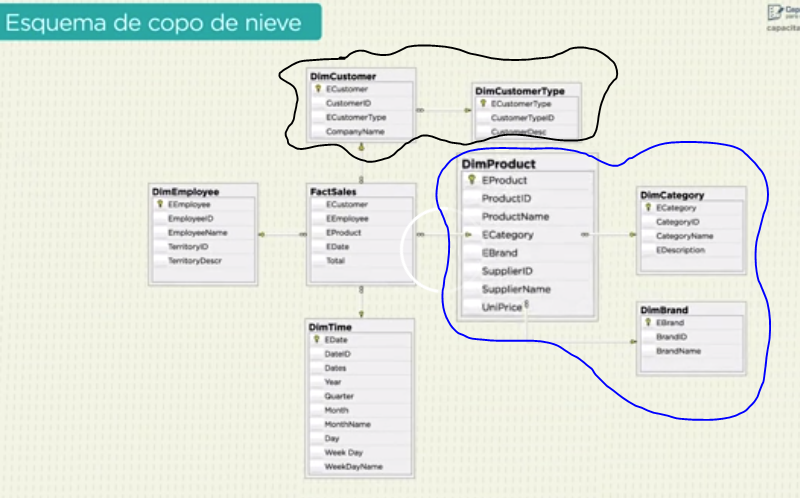

A este curso llego gracias a la p√°gina deAPE SENA. En un banner veo que se ofertan capacitaciones gratuitas avaladas por el logo de "CLARO". Inmediatamente me dirijo a la oferta y creo una cuenta.
Quien oferta, o quien lidera el proyecto lo hace a nombre de Capacitate para el empleo | FUNDACIÓN CARLOS SLIM
A continuación comparto los datos de registro y acceso al curso:
Es Desarrollo de sitios web y aplicaciones móviles
¬øCu√°l es la ruta a seguir?
Curador de datos
Administrador de bases de datos
Administrador de servidores
Programador (orientado a objetos)
Desarrollador Front-end
Desarrollador Back-end
Desarrollador de aplicaciones móviles
Desarrollador de videojuegos
Certificado
Curador de datos
Crear, limpiar, manejar y optimizar una base de datos, mediante un software especializado, para que la información sea útil y se convierta en un activo importante para la toma de decisiones.
Importancia de una base de datos
En el mundo actual las bases de datos se encuentran de manera digital esto reduce el tiempo de actualización, facilita la consulta de la información, y ademas permite la Integridad de los datos, es decir la información no se repite ni se pierde en la almacenación. Son seguras ya qe solo estan autorizadas por personal calificado.
Ventajas
Ética profesional
Integridad de los datos
No compartir información sin autorización
Seguridad
No copiar o robar información
Notificar si existe alguna anomalía
Todo lo que hagas debe ser autorizado
Base de Datos y su Estructura
Una base de datos es un conjunto de información estructurada y relacionada entre sí que se almacena en una computadora y se consulta por medio de un software especializado.
Clave Primaria
Campos
Campos
id
Nombre
Edad
Registros
442
Alan
22
Registros
443
Samantha
07
Registros
444
Sheilon
18
Modelo Entidad Relación
Fecha 19.03.2023
Herramienta usada para desglozar las tablas en tablas mas pequeñas y de esa manera establecer una relación
Entidades
Se representa por un rectangulo Rect
Atributos
Se representa por un ovalo Ova
Relaciones
Se representa por un rombo R
Normalización
Normalizar o normalización es acomodar los datos teniendo en cuenta el modeloEntidad Relación
Teniendo en cuenta la siguiente tabla veremos algunos ejemplos de cómo podemos normalizar los datos:
USUARIOS
Nombre
Empresa
Direccción Emr.
url1
url2
url3
Juan Palomo
Montes Alba
Mayor.34
melones.es
produc.co
Arguiñano
Restaurante Pi
Luna.52
comer.co
produc.co
nueva.es
Ejemplo #1 - Agrupando campos repetidos:
USUARIOS
Clave
Nombre
Empresa
Direccción Emr.
url
1
Juan Palomo
Montes Alba
Mayor.34
melones.es
1
Juan Palomo
Montes Alba
Mayor.34
produc.co
2
Arguiñano
Restaurante Pi
Luna.52
comer.co
2
Arguiñano
Restaurante Pi
Luna.52
produc.co
2
Arguiñano
Restaurante Pi
Luna.52
nueva.es
Cada registro debe tener su llave primaria, debe ser √∫nico e independiente y finalmente no presentar campos nulos.
Ejemplo #2 - Separar datos en tablas
USUARIOS
Clave
Nombre
Empresa
Direccción Emr.
1
Juan Palomo
Montes Alba
Mayor.34
2
Arguiñano
Restaurante Pi
Luna.52
De esta manera separamos los datos en dos tablas y los relacionamos con una llave foranea.
URL
Clave
Emp
Url
1
1
melones.es
2
1
produc.co
3
1
comer.co
4
2
produc.co
5
2
nueva.es
Aqui la llave foranea seria los registros o datos del campo 'Emp'.
Ejemplo #3 - Mejor estructuracion
CONTACTOS
Cl
Nombre
Emp
1
Juan Palomo
1
2
Arguiñano
2
Divide los campos que dependen de una llave foranea, en distitas tablas.
EMPRESAS
Cl
Nombre
Emp
1
Montes Alba
Mayor.34
2
Restaurante Pi
Luna.52
Divide los campos que dependen de una llave foranea, en distitas tablas.
EMPRESAS
Cl
Nombre
Emp
1
Montes Alba
Mayor.34
2
Restaurante Pi
Luna.52
Divide los campos que dependen de una llave foranea, en distitas tablas.
URL
Clave
Emp
Url
1
1
melones.es
2
1
produc.co
3
1
comer.co
4
2
produc.co
5
2
nueva.es
Divide los campos que dependen de una llave foranea, en distintas tablas.
Una correcta normalización permite ahorrar espacio porque evita los datos repetidos, agilizando la consulta.
Cardinalidad
Es la forma en que las entidades se relacionan entre sí
CARDINALIDAD - TIPOS
Relación uno a uno
Relación uno a muchos
Relación muchos a muchos
1:1
1:N
N:M
Plan de Trabajo
Al realizar tu labor podrían existir dos situaciones
PLAN DE TRABAJO
Crear Base de Datos
Depurar Base de Datos
1. Diagnóstico:Análisis y creación de diagramas de Entidad-Relación. Entiendes el diagrama, ¿haces preguntas al supervisor?
1. Respaldo:Realiza una copia de seguridad de todo lo que vas a tocar.
2. Análisis:¿La información está limpia? ¿Nombres propios en MAYÚS, mismo formato en Fechas, igual longitud de caracteres, etc?
3. Ejecución:Implemento todo en un software. Creo un cronograma de desarrollo.
3. Ejecución:Limpio Base de datos, eliminando registros repetidos, etc. Creo un cronograma de actividades
4. Testing:Realizo pruebas, que las consultas y todo funcione correctamente.
4. Exportar:Convierto el archivo al formato adecuado de la base de datos
EVAL√öATE:Verifica si cumpliste tus objetivos, la cantidad de tareas que hiciste y el tiempo de labor
Visualizador de datos (EXCEL)
Llamadas hojas de cálculo, es una herramienta que usa tablas y gráficas para filtrar, ordenar, manipular y presentar información de manera sencilla.
Una hoja de c√°lculo es una gran tabla compuesta por celdas, columnas y filas.
Importar | Exportar
IMPORTAR
Desde excel clic en la pestaña [Datos]
1. Ubica el botón o la opción: De texto/CSV
2. Selecciona el archivo
3. Selecciona un separador tipo 'Comas'
4. Selecciona un calificador de texto tipo 'Comillas'
5. Selecciona Tipo de dato General
6. Finalizar
Es posible que al finalizar deba seleccionar la celda donde se quiere aparezca los nuevos datos de la tabla.
EXPORTAR
Desde excel clic en la pestaña [Archivo]
1. Clic en Guardar como
2. En tipo selecciona Valores separados por comas (*.CSV)
3. Selecciona un Guardar
4. Selecciona Si, en el pop-up
Es posible que al finalizar deba seleccionar la celda donde se quiere aparezca los nuevos datos de la tabla.
Para realizar modificaciones tanto en la Gráfica como la tabla dinámica; modificar la tabla original y en la pestaña Datos clic en [Actualizar todo]
Sistemas gestores
Software que permite manejar la información contenida en una base de datos de manera visual y sencilla.
SISTEMA GESTOR
Funciones:
üñê Manipular su contenido
üîê Seguridad de la informaci√≥n
ü뮂Äçüíº Control de usuarios
üíæ Recupera y restaura
SISTEMA GESTOR
Tipos:
Adaptación a modelos de datos
N√∫mero de usuarios
N√∫mero de sitios
Jer√°rquico
Red
Relacional
Monousuario
Multiusuario
Centralizados
Distribuido
SISTEMA GESTOR
Niveles:
Nivel Físico
Nivel Lógico
Nivel Externo
Disposito de almacenamiento, aquí se encuenta la información como un conjunto de bytes
Es el lenguaje de programación que se usa para acceder al nivel físico.
Interfaz gr√°fica que el usuario puede ver.
SISTEMA GESTOR
Componentes:
Usuarios
Lenguajes
Diccionario de datos
Elementos de seguridad
Administradores
Programadores
Usuario Final
Conjunto de instrucciones, para manipular y definir las bases de datos.
Guarda las definiciones de la información en la base de datos
Proporciona mecanismos para garantizar la seguridad e integridad de los datos
OR Filtra resultados que cumplan por lo menos con alguna de las sentencias.
SELECT | FROM | WHERE
SELECT
FROM
WHERE
WHERE Hace uso de las sentencias que a su vez empleanOperadores Relacionales para realizar una comparación.
Consultas - Organización de la información
Son las instrucciones que complementan la búsqueda de la información.
ORDER BY
SELECT
FROM
WHERE
ORDER BY
ORDER BY Nos permite organizar la información consultada.
Ejemplo:SELECT Id, Nombre, Edad FROM t_autos WHERE precio > 100.000 ORDER BY precio ASC
ASC = ASCENDENTE
-|- DESC =
DESCENDENTE
Consultas avanzadas
Sirben para realizar consultas entre dos o m√°s tablas.
INNER JOIN
INNER JOIN Define las tablas donde se har√° la consulta.
SELECT
t_cliente.Nombre,
t_producto.Producto
FROM
t_cliente
INNER JOIN
t_producto
ON t_cliente.ID_Cliente=t_ventas.Cliente
Comando
Campos de las tablas a consultar .nombreTabla.nombreCampo,
Comando
Nombre tabla a consultar
Comando
Nombre de la otra tabla de consulta
Comando más la sentencia de unión de tablas : nombreTabla.llavePrimaria=nombreOtraTabla.llaveForanea
Por Cada tabla que quiera agregar a la búsqueda añada INNER JOIN y agrega AND seguido de la sentencia de unión de tablas tablas correspondiente:
SELECT t_cliente.Nombre, t_producto.Producto FROM t_cliente INNER JOIN t_productos INNER JOIN t_ventas ON t_cliente.ID_Cliente=t_ventas.Cliente AND t_producto.ID_Producto=t_ventas.Producto
Vistas
Es una tabla virtual que no forma parte del modelo Entidad Relación, y se genera unicamente en un gestor de bases de datos.
VISTAS
Para crear una vista desde el gestor de bases de datos seleciona la base de datos:
1. Clic derecho | Create New | Vista
2. En el √°rea de trabajo / Nombra la vista
3. En el área de código, ingresa la consulta deseada.
4. Clic en Save(Guardar)
Para consultar la vista usa la siguiente instrución: SELECT*FROM nombreVista
Ejercicio #1
En este ejercicio se pone en practica todo lo visto a la creación y consulta de bases de datos hasta el momento.
Ejercicio 1: Teniendo en cuenta la siguiente base de datos, la cual ya creamos en mariaDB:
Genere el código para para obtener el número de venta, nombre del cliente, modelo del producto, y las fechas de venta hechas el 06 de febrero del 2015
Solución:
Code {sql}SELECT
t_ventas.id_ventas,
t_clientes.nombre,
t_productos.modelo,
t_ventas.fecha
FROM
t_clientes
INNER JOIN t_ventas ON t_clientes.id_clientes = t_ventas.id_clientes
INNER JOIN t_productos ON t_productos.id_productos = t_ventas.id_producto
WHERE
DATE(t_ventas.fecha) = '2015-02-06'
// Adisionalmente podrias agregar ASC
para organizar de manera ascendente los datos
teniendo en cuenta las ventas:
ORDER BY
id_ventas ASC
Mantenimiento de bases de datos
Fecha 11.04.2023
Impotarte, se debe optimizar y mantener la integridad de los datos. Se debe dar servicio de manera periodida para evitar perdidas de información.
CREACIÓN DE INDICE [comandos]
Agiliza las búsquedas, clasifica la información y CREA UN INDICE para vincular uno o varios campos de la tabla.
1. Inserta el comando: INDEX
2. Pon un título
3. Entre parentesis pon los (campos asociados)
4. Clic en Ejecutar(F9)
INDEX ClientesFrecuentes(Nombre, Apellido)
CREACION DE INDICE [Interfaz Gr√°fica]
1. Clic derecho en el campo
2. Clic en Crear nuevo indice
3. Clic en FULLTEXT
4. Edita el nombre desde la pestaña indices
Puedes agregar campos al indice dando clic derecho sobre el indice y en agregar columnas. No olvides GUARDAR CUALQUIER CAMBIO
COMPROBAR LA INTEGRIDAD DE LOS DATOS
Con las herramientas del sistema podemos Optimizas, Analizar y Reparar datos.
1. Men√∫ Herramientas >> Mantenimiento
2. Elige la Tabla
3. Selecciona la Operacación a realizar
4. Finaliza con Ejecutar
Respaldo y recuperación
Evita perdida de información por errores, realiza un respaldo lógico.
RESPALDO LOGICO
Es la copia del código de programación de la base de datos para crearla de nuevo.
1. Crea una carpeta para el respaldo
2. Clic derecho en la base de datos
3. Clic en exportar base de datos como SQL
4. Selecciona las opciones: Bases de datos [crear] | Tablas [Crear]
5. Por √∫ltimo selecciona la carpeta de destino y de clic en Exportar
RECUPERACION DE BASE DE DATOS
Recupera la base de datos que has respaldado con anterioridad.
1. Clic Men√∫ archivo
2. Clic en Cargar archivo SQL
3. Cargar archivo
4. Ejecutar código
Uso del código
Con el podemos generar, controlar y manipular una base de datos. Es usado por programadores, curadores y administradores.
SQL Lenguaje de estructura de consulta
Es el codigo de programación de las bases de datos y se divide en:
Lenguaje de definición
Lenguaje de manipulación
Sirve para Crear, Modificar y borrar tablas o campos e incluso bases de datos.
Sirve para Crear, Modificar, Borrar y Buscar los registros en las bases de datos
Para usar el codigo en el gestor, ingresa a la pestaña de Consultas [Query], y digita el código y en la barra de herraminetas da clic en Ejecutar[F9]
CódigoSQL
Descripción
Ejemplo
SELECT
Se utiliza para seleccionar columnas de una tabla o vista.
SELECT nombre, edad FROM usuarios;
FROM
Se utiliza para especificar la tabla o vista desde la cual se seleccionan las columnas.
SELECT nombre, edad FROM usuarios WHERE edad > 18;
WHERE
Se utiliza para filtrar los resultados basándose en una condición especificada.
SELECT * FROM pedidos WHERE fecha = '2023-04-18';
JOIN
Se utiliza para combinar dos o más tablas en función de una columna en común.
SELECT * FROM ventas JOIN productos ON ventas.producto_id = productos.id;
GROUP BY
Se utiliza para agrupar los resultados de una consulta en función de una o varias columnas.
SELECT categoria, COUNT(*) FROM productos GROUP BY categoria;
ORDER BY
Se utiliza para ordenar los resultados de una consulta en función de una o varias columnas.
SELECT * FROM clientes ORDER BY nombre ASC;
INSERT INTO
Se utiliza para insertar una nueva fila en una tabla.
INSERT INTO usuarios (nombre, edad, correo) VALUES ('Juan', 25, 'juan@example.com');
UPDATE
Se utiliza para actualizar los valores de una o varias filas en una tabla.
UPDATE productos SET precio = 10 WHERE categoria = 'Alimentos';
DELETE FROM
Se utiliza para eliminar una o varias filas de una tabla.
DELETE FROM pedidos WHERE fecha < '2023-01-01';
CREATE TABLE
Se utiliza para crear una nueva tabla en la base de datos.
CREATE TABLE clientes (id INT PRIMARY KEY, nombre VARCHAR(50), correo VARCHAR(50));
ALTER TABLE
Se utiliza para modificar una tabla existente en la base de datos.
ALTER TABLE usuarios ADD COLUMN telefono VARCHAR(20);
DROP TABLE
Se utiliza para eliminar una tabla de la base de datos.
DROP TABLE ventas;
Administración de usuarios
Faltan temas, dejo hasta aquí para iniciar con el otro curso
Administrador de BD
Como admin debes operar sistemas de información buscando ser mas eficiente la consulta y toma de decisiones de las organizaciones. Con el lenguaje SQL podrás lograrlo, y es de vital importancia velar por mantener la integridad, seguridad y privacidad de la información.
Es competencia del admin crear tablas y relaciones entre ellas, con base al tipo de organización que requiere dicha información. Bebes permitir que la información este disponible y segura.
SQL
Con el podemos generar, controlar y manipular una base de datos. Es usado por programadores, curadores y administradores.
SQLLenguaje de estructura de consulta
Es el código de programación de las bases de datos y se divide en:
Para usar el código en el gestor, ingresa a la pestaña de Consultas [Query], y digitar el código y en la barra de herramientas da clic en Ejecutar[F9]
Lenguaje de definición
Lenguaje de manipulación
Sirve para crear, modificar y eliminar la estructura de la base de datos y sus objetos, como tablas, índices y vistas.
Sirve para Crear, Modificar, Borrar y Buscar un registro en las bases de datos
CREATE
Se utiliza para crear nuevos objetos de base de datos, como tablas, índices o vistas.
CREATE TABLE usuarios (id INT, nombre VARCHAR(50));
INSERT
Se utiliza para agregar nuevos registros a una tabla en una base de datos.
INSERT INTO empleados (nombre, edad, salario) VALUES ('Juan', 30, 50000);
ALTER
Se utiliza para modificar la estructura de una tabla u objeto existente. Pueden agregar o quitar campos a una tabla.
ALTER TABLE nombre_tabla ADD nombre_campo tipo_dato;
UPDATE
Se utiliza para actualizar o modificar registros sin necesidad de borrarlos y volverlos a ingresar.
UPDATE empleados SET salario = 50000 WHERE id = 101;
DROP
Se utiliza para eliminar objetos o tablas de una base de datos.
DROP TABLE productos;
DELETE
Se utiliza para borrar registros de una tabla
DELETE FROM tabla WHERE condición;
TRUNCATE
Se utiliza para eliminar todos los registros de una tabla, pero mantiene la estructura de la tabla intacta.
TRUNCATE TABLE nombre_tabla;
SELECT
Se utiliza para buscar información en una base de datos.
SELECT columna1, columna2 FROM tabla;
Requerimientos del cliente
Antes de empezar con la creación de una base de datos debemos saber identificar cuales son exactamente los requerimientos del cliente.
Identifica estas seis cosas b√°sicas:
üõí
1. Al implementar una base de datos desde cero, pregunta a tu cliente cómo se desempeña su negocio
‚ùî
4. Prepara un cuestionario para aclarar puntos ciegos que no logres comprender, preguntas como:
¿Es necesario que los empleados pertenezcan sólo a una tienda?
¬øLos productos pueden pertenecer a m√°s de un proveedor?
üìã
2. Si tu cliente quiere migrar su sistema, pide toda la documentación existente
ü뮂Äçüè´
5. Genera una propuesta y exponla en una reunión con tu cliente; de esta manera podrá hacer correcciones y resolver tus dudas
‚úç
3. Anota todo lo que creas importante cuando te informen u observes el proceso de negocio y siempre resuelve tus dudas. No des cosas por hecho
üí±
6. Toma en cuenta que todo tu trabajo estará sujeto a cambios; por lo tanto, no te aferres a tu idea inicial. Sólo así podrás lograr una propuesta final que cumpla con todos los requerimientos
Modelo relacional
El modelo relacional en SQL es un enfoque para organizar y gestionar datos en bases de datos relacionales. Se basa en tablas con filas y columnas, donde cada tabla representa una entidad y cada fila representa una instancia individual de esa entidad. Las relaciones entre las entidades se establecen mediante claves primarias y claves foráneas, permitiendo la vinculación y consulta de datos de manera estructurada y eficiente. Este modelo ofrece integridad de datos, flexibilidad y capacidad para realizar consultas complejas utilizando el lenguaje SQL.
Normaliza hasta la tercera forma normal. De esa manera todas las tablas tendr√°n una llave primaria.
4️⃣
Elige atributos, no almacenes datos que pueden inferir de otros. Ejemplo Edad
5️⃣
Tabla cruzada. Siempre que tengas una relaciónmuchos a muchos oa muchos o cero Es mejor usar una tabla cruzada.
Tabla cruzada
Se usan cuando existe una relación de muchos a muchos,ya que si unes la tabla con una llave foránea a la otra tabla, esa misma tendría inconsistencias de duplicidad.
Por ejemplo:
Una tabla de Ventas y otra de Productosse relacionan con una cardinalidad de muchos a muchos.Por que una venta puede tener muchos productos y un producto puede estar en varias ventas.
Si la relaci√≥n se hace poniendo unaüîë llave for√°nea (FK) en la tabla 'Ventas'. Esto supondr√≠a que podr√≠a comprar varios productos en la venta uno. Pero para cada producto tendr√≠a que ponerID y # VENTA repetido. Y como esta es la llave primaria de la tabla, romper√≠a la primera forma normal.
Ejemplo de un modelo relacional - Practica
Siguiendo con el ejemplo de la creación de una Base de datos para una tienda departamental:
Reglas de NegocioTienda Departamental
1️⃣
üöö Un Producto por proveedor
6️⃣
üìÑ Una Venta le pertenece a un empleado.
2️⃣
üõí Un Proveedor vende ninguno o varios productos
7️⃣
ü뮂Äçü붂Äçüë¶ Un Cliente puede realizar varias compras
3️⃣
üß± Un Producto tiene solo una categor√≠a.
8️⃣
üë® Una Venta le pertenece a un cliente.
4️⃣
üç£ Una Categor√≠a pude tener ninguno o muchos productos.
Es una base de datos orientada al análisis de la información. No tiene en cuenta las transacciones o procedimientos almacenados en la base de datos, su enfoque es en extraer y organizar información importante almacenada en otras bases de datos.
Características
1️⃣
Orientado a temas
Los datos deben estar organizados con respecto al tema a analizar.
2️⃣
Variante en el tiempo
Los cambios de los datos en el tiempo deben quedar registrados para evitar pedidas de información.
3️⃣
No vol√°til
La información no se modifica ni se elimina, solo es de lectura.
La función de un Data Warehouse es contener los datos útiles para el ambiente de negocio y posteriormente transformarlos en información relevante, que se pueda analizar rápidamente. De esta forma el personal autorizado podrá realizar consultas y reportes sin afectar la base de datos.
Son estructuras de datos especializadas dentro de un Data Warehouse, diseñadas para satisfacer necesidades específicas. Estos subconjuntos contienen datos seleccionados y optimizados para un grupo particular de usuarios o áreas funcionales, ofreciendo acceso rápido y eficiente a la información relevante. Estos pueden ser departamentales, o basados en temas, enfocados en aspectos específicos de los datos como ventas, marketing o finanzas. Su diseño permite una mejor accesibilidad y agilidad en el análisis de datos para respaldar la toma de decisiones.
Esquemas
EsquemaEstrella
Es el mas simple de todos
La Tabla de Hechos o la central, esta rodeada de entidades llamadas Dimensiones
Diseño lógico relacional.
La tabla Hechos recae en la segunda forma normal.
latabla de Hechos Puede ser vista, como una tabla cruzada entre varias entidades y su llave primaria queda conformada por la combinación de las llaves primarias de las Dimensiones
De esta manera se hacen Eficientes las consultas. Ya que el sistema en vez de buscar información en todas las tablas, solo debe buscar en la tabla de Hechos.
üëÅ‚Äçüó® Importante Solo existe una tabla de dimensiones x dimension
DimCustomer
DimEmployees
DimProduct
EsquemaCopo de Nieve
M√°s complejo que los dos esquemas.
Diseñado mas que todo para el mantenimiento de Dimensiones
Parecido a un modelo relacional.
Cumple con la tercera forma normal.
Ahorra espacio en memoria, por que se divide en mas tablas.
Segmenta la información en caso de que esta sea muy extensa.
Tiene un bajo rendimiento , debido a lo complejo que se vuelven las consultas.
Ejemplo:

EsquemaConstelación
M√°s complejo que los dos esquemas anteriores.
Existe m√°s de una Tabla de hechos
Las tablas de dimensiones pueden estar repartidas entre las multiples Tablas de Hechos
Poseen una Gran flexibilidad.
Poca facilidad, difícil de mantener en un futuro por el crecimiento de los datos.
Misma Velocidad de b√∫squeda üîçque en el esquema estrella. Siempre y cuando se genera una tabla por dimension.
Ejemplo: ¬øCual es el Bono por mes de cada empleados, en cada uno de los territorios? De esta manera se sabra elRendimiento de cada empleado:
Software de diseño de Base de datos
El proceso que usa el software para diseñar y crear la base de datos es el siguiente:
Creación de una BD
1️⃣
Conexión al manejador de base de datos
2️⃣
Creación de una base de datos
3️⃣
Creación de tablas y atributos
4️⃣
Relaciones entre tablas
5️⃣
Modificación de llaves primarias
1️⃣ Abre SQL Server Management Studio > ✅ Trust server certificate> Connect
2️⃣ Clic derecho en Databases> New Database>
2️⃣ Databases name:Nombrarla > OK
3️⃣ Ingresa a la base de datos creada y da clic derecho en Tables> New > Table...
3️⃣ Rellena los datos en Column Name > Date Type> para que puedas Guardar
4️⃣ Una vez diste en guardar en el paso anterior, te debió haber activado un campo para ponerle nombre a la tabla. En este caso verificamos que estamos en nuestra base de datos Pruebay en la opción Database Diagrams> hacemos clic derecho y luego YES Ahora crearemos las relaciones. Mira la siguiente imagen ...
4️⃣ Da clic sobre la primer opciónNew Database Diagram
4️⃣ Clic en la tabla que vas a montar, y Add para agregar al al diagrama
4️⃣ Repite el paso anterior para cada una de las Tablasque deseas agregar.